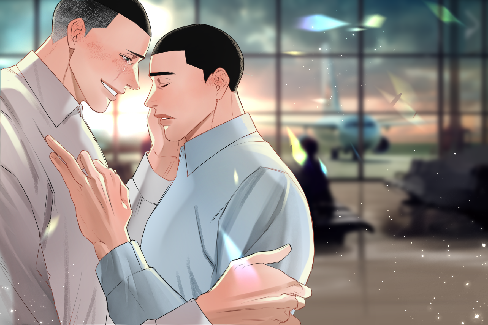

8
명헌은 잠시 말없이 우성의 얼굴을 올려다보다 눈을 감는다. 아, 그
버릇. 우성은 울음이 터질 것처럼 시큰한 눈가를 찡그리면서 겨우 고비를
참아낸다. 중요한 이야기를 할 거잖아, 내가 당신한테 이별조차 중요한 사람이
된다면, 그건 기뻐해도 되는 걸까?
“…넌 여기서 우리가 헤어졌다고 생각해, 뿅?”
이번만큼은 대답이 나올 줄 알았는데, 명헌은 또 질문으로 우성의 말을
가로막아버린다. 우성은 흠칫 놀랐다가 곧 눈을 슬쩍 내리깔았다. 엄밀히
말하자면 이별을 한 건 아니었지만… 서로 만나지 못하게 된 건 맞잖아요.
잘못한 어린애처럼 갈피를 잡지 못하고 웅얼거리며 나온 말에 명헌이 어깨를
으쓱한다. 글쎄용, 나는 굳이 고르자면… ‘우리’가 아니라고 생각해용. 우성이
움찔, 몸을 떠는 것에 슬쩍 눈길을 던진 명헌이 곧 말을 잇는다.
“나는 ‘우리’가 헤어진 게 아니라, 네가 나아갔다고 생각해. 뿅.”
너는 농구로 말하는 사람이라고 했잖아용, 너와 공을 주고받은 건 일 년
반 밖에 안되지만… 나는 네 농구가 말하는 것 같았어용. 너는 정말로 농구를
좋아한다고, 그래서 멈출 수가 없는 사람이라고. 너는 항상 앞으로, 더 위로,
남들이 두려워하는 꼭짓점을 삼아 나아가야 하는 사람이라고 말이에용. 그게 네
본질이고… 명헌은 담담히 제 발끝을 한 번 내려다보았다가 고개를 들어 우성을
마주한다.
넌 나한테 사랑을 약속하겠다고 했지용.
나도 알아용. 세상의 어떤 사람들에게는 분명히 사랑이 약속이 될 수도
있다는 걸용. 그리고 너도 언제나 그런 방식으로 나한테 대답해 왔다는 걸, 뿅.
하지만 나는 네게 그런 걸 바라지 않아용. 네가 어떤 사람인지 아니까용. 너는
끊임없이 변하고 다음에 닿아야 하는 사람이고, 그런 네게 약속은, 노력해야
하는 것이고, 언젠가는 부담이 될 테고, 어쩌면 발목을 매는 끈이 되고 말 것
같으니까, 뿅.
“…! 그런, 그렇게 생각한 적 없어요!”
“부모님한테도 그렇게 연락 안 한다는 거 다 들었다, 뿅. 고집부려서 애쓰는
거잖아용.”
“형한테 애쓰는 거 아까운 적 없어요, 그건, 그런 건 당연히 해야 하는
거고… 할 수 있어요.”
“난 네가 할 수 있는 게 아니라 하고 싶은 걸
했으면 좋겠다, 뿅.”
명헌이 우성을 달래듯-진정하라는 것처럼 가볍게 우성의 뺨을
쓰다듬는다.
“합숙 때 도망치면서 배웠잖아용. 단 한 번도 쉬지 않고 끊임없이
달리기만 할 순 없어용. 가끔은 도망쳐서 들어선 길이 생각지도 못한 이야기를
들려주기도 하고, 뿅.”
뭣보다도-우성의 숨이 가라앉자 명헌의 손이 내려간다. 불안한 듯 시선을
든 우성의 눈이 명헌의 것과 마주쳤다. 어느새 노을이 지고 있는 공항의 창가로
새어 들어온 붉은 햇빛. 꼭 어제의 촛불과 같은 색. 우성은 문득-자신이 명헌의
눈동자에서 보석을 읽어낸 게, 눈앞에 보석이 반짝이고 있었기 때문은 아님을
깨닫는다. 왜냐면 지금은, 아무것도 없어도.
“…형은 항상 나한테 가르쳐주기만 하는 것 같아요.”
우성이 억울한 듯 중얼거린다. 오늘 들른 곳 전부, 내가 형한테 뭔가를
배운 곳이었어요. 내 농구를 하는 법, 팀이 되는 법, 그리고 무언가를 각오하는
법도. 그래서… 나도 형한테 어떻게든 돌려주고 싶었어요. 그런데 형이랑
만나지도 못하는 미국에서, 내가 형한테 해줄 수 있는 건 약속밖에 없으니까,
내가 할 수 있는 약속은 전부 주고 싶었던 건데….
우성의 고해처럼 쏟아지는 토로에 명헌이 작게 웃는다. 그랬나용.
이상하네용. 나는 오늘 너한테 배운 것들을 다시 돌이켜보고 싶어서, 내가
너에게 받았던 것만 골라 돌아다닌 건데용.
명헌의 말에 우성이 벌떡 고개를 든다. 흔들리는 눈동자, 크게 뜨인 눈.
…거짓말, 못 믿겠다는 듯이 작게 중얼거리는 얼굴이 지금이라도
당장-이명헌에게 모든 걸 가르쳐주었던-그 소년으로 돌아간 것 같아서,
이명헌은 터지려는 웃음을 겨우 참으며 대답한다.
“…널 보면서 처음으로 알았어용. ‘농구’가 누군가에겐 이토록 선명한 언어가 될
수 있다는 것도, 그래서 그것만으로도 온 마음을 다하고 싶을 만큼 누군가
좋아질 수 있다는 것도, 그 마음이 너무 커져서 ‘농구’가 아닌, 그다음을
바라게 되는 기분도, ‘좋아한다’는 말이 쌓이고 쌓여서, 끝내는… 그 사람을
보내줄 수 있는 용기가 된다는 것도, 뿅.”
이명헌은 정우성을 마주 본다. 눈앞에는 뒷짐을 지고, 겁을 잔뜩 물어
굳은 턱으로, 그럼에도 꼿꼿하게 눈만은 들어 저를 빤히 들여다보던-이명헌을
몰라 무서워하면서, 이명헌을 보기를 주저하지 않던, 막 산왕에 발 디딘
1학년의 정우성이 있다.
그 눈을 보는 순간 이명헌은-자신은 이런 눈을 가진 사람을, 정우성이
아니고서야 어디서도 못 볼 거라는 걸 알았다. 저도 모르게 웃음이 터질 것
같았다. 알 수 없는, 그러나 무한히 확신에 가까운 직감이 차올랐다. 어렴풋이
산왕에 오길 잘했다고 생각했다. 네가 나에게, 내가 상상치도 못한 것들을
보여주리란 걸 그때부터 알았으니까.
“그러니까 네가 나에게 가르쳐주었듯이, 이번에는 내가 너에게
가르쳐주고 싶어용. …네가 노력하지 않아도 네 편이 될 사람이 생긴다는 걸,
약속하지 않아도 분명히 네가 돌아올 곳이 되어주는 사람이 생긴다는 걸, 뿅.”
명헌이 눈을 감았다 뜨는 그 버릇처럼 느리게-우성에게 손을 내민다. 우성은
저도 모르게 그 손안에 제 손을 내밀어 기댔다. 양 손바닥이 맞닿고, 겹쳐지고,
그 사이로 섞인 체온이 천천히 같아지는, 닮아가는 감각. 꼭 하나가 되는 것
같은…
“…네게 약속조차 필요 없는 믿음이 될게. 나를 믿어줄래, …뿅?”
명헌의 눈은 우성을 맞이했던 그 순간과 다름없이 휘어질 듯 미소를
머금고 있었다. 아아, 정말. 우성은 결국 참지 못하고 웃음을 터뜨린다. 그
탓에 시큰하던 눈가에 눈물이 배었지만 그쯤은 신경도 쓰이지 않을 만큼 가슴이
벅찼다. 새어 나오는 웃음을 갈무리할 생각도 못 한 채-우성이 다시 한번
반지를 꺼낸다. 그림 같은 야경도, 로맨틱한 촛불도, 화려한 배경도 없는.
고작해야 두 사람과 추억뿐이지만.
이제는 안다. 당신이 그 어떤 약속의 말도, 화려한 프러포즈도 바라지
않았음을.

우성은 명헌의 손을 꽉 쥔 채 마주 보고 입을 열었다. 다시 얘기할게요,
형. 나는 형을 사랑해요. 내가 언제, 어디에 있든, 몇 번을 처음 이 곳에서
그랬던 것처럼 형을 두고 떠나게 되어도, 또 어쩌면 형이 나를 두고
떠나버린다고 해도. 형이 아무 노력도 하지 않아도 형의 편이 될 거고, 형이
약속하지 않아도 돌아올 거라는 걸 알 거예요. 그리고, 나는. …형도 나와 같을
거라고 믿어요.
“형도, 나를 믿어줄래요?”
누가 먼저랄 것 없이 웃음이 터지고 품이 열린다. 양팔 가득 서로를
부둥킨 채 그림자가 겹쳤다. 붉은 노을은 두 사람의 그림자를 어디까지고 닿을
것처럼 길게 늘렸다. 하늘은 여전히 맑다. 있던 먹구름도 싹 걷히고야 말 것
같은 풍경이었다.
end.